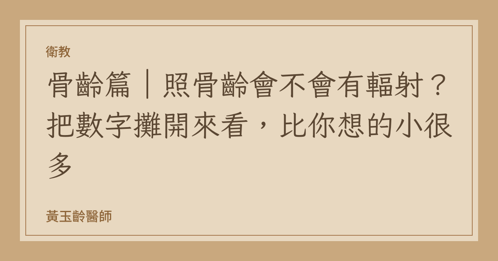

衛教
骨齡篇｜照骨齡會不會有輻射？把數字攤開來看，比你想的小很多
「醫師，我知道骨齡很重要，可是照 X 光耶……會不會有輻射？」
這是骨齡衛教中最常被卡住的一關。家長不是不想做，是不知道要怎麼衡量風險。
那就把數字直接攤開。
一、一張手部 X 光的輻射量是多少
骨齡檢查照的是左手掌與手腕的正面單張 X 光。
依據 StatPearls 的 Bone Age 章節與多篇文獻的一致記載，單次手腕 X 光的有效劑量落在 0.0001–0.1 毫西弗（mSv） 之間，實際數值取決於機器規格、數位化程度與孩子的體型。2021 年 Frontiers in Pediatrics 的骨齡評估回顧則引用了更低的估計值：低於 0.00012 mSv。
現代數位化 X 光機（DR）在低劑量兒科設定下，實際劑量通常落在這個區間的偏低端。
多篇文獻用同一個比喻：這個劑量低於 20 分鐘的天然背景輻射。
二、拿搭飛機來比較
這是家長最容易有感的對照。
在地面，人體接受宇宙與地表輻射的速率大約是 0.06 微西弗／小時（µSv/h）。爬到飛機巡航高度（約 35,000 呎），這個速率跳到約 6 µSv/h，也就是地面的 100 倍左右（FAA Advisory Circular 120-52；日本 JISCARD EX 模型估計高峰可達 7 µSv/h）。
用這個比較換算：
一張手部骨齡 X 光 0.0001–0.1 mSv（多數落在低端）
台北–高雄國內線（約 50 分鐘，低緯度、巡航時間短） 約 0.002–0.005 mSv
一趟跨太平洋長程航班（約 7 小時）約 0.04–0.05 mSv
全球天然背景輻射年平均（UNSCEAR）約 2.4 mSv／年
一次骨齡檢查，量級上與一趟國內線飛行相當甚至更低，而且只佔一年天然背景輻射的極小比例。
註：航程劑量會隨緯度、巡航高度與太陽活動週期變動，此為概略換算，不同來源的估計會有差異。
三、風險要怎麼理解才合理
Frontiers in Pediatrics 的回顧引用的估算是：以 0.00015 mSv 的曝露計算，40 年死亡率的相對風險增加約 5.1 × 10⁻⁸。
這是一個在統計上難以與零區分的數字。相較之下，孩子每天上下學路上承擔的風險，量級都遠遠高於此。
放射防護的核心原則是 ALARA（As Low As Reasonably Achievable）——在能取得必要臨床資訊的前提下把劑量壓到最低。骨齡檢查之所以在兒童內分泌科被廣泛使用，正是因為它是單張、局部、低劑量、且沒有替代品能提供同等資訊的檢查。（超音波與 MRI 評估骨齡的方法仍在研究階段，準確度尚不足以取代 X 光。）
四、骨齡到底告訴我們什麼
這才是重點。骨齡不是「知道就好」的數字，它會實際改變處置決策。
1. 判斷生長空間還剩多少。 生長板的成熟程度直接決定還有多少長高的時間。骨齡 11 歲的 12 歲孩子，和骨齡 14 歲的 12 歲孩子，處境完全不同——即使兩人身高一樣。
2. 預測成人身高。 結合目前身高與骨齡，可用 Bayley-Pinneau 等方法推估成人身高（PAH），再與父母的遺傳標的身高（midparental height）對照，判斷是否偏離。
3. 區分「性早熟」與「單純長得快」。 有些孩子只是體格壯、速度快，骨齡與實齡相符；有些則是骨齡已經超前 2 年以上，那是完全不同的臨床意義。
4. 區分「生長遲緩」與「體質性生長延遲」。 骨齡落後於實齡的矮小孩子，往往還有很多追趕空間，處置態度會保守得多。
五、什麼情況該安排骨齡
不是每個孩子都需要照，也不必每年照。臨床上會考慮安排的情況包括：
發育太早：女孩 8 歲前、男孩 9 歲前出現第二性徵
發育太慢／長太慢：身高低於同齡同性別第 3 百分位，或一年身高增加不到 4 公分
生長曲線跨越百分位：往上或往下跨越兩條主要百分位線
家長希望做一次成長評估：男孩建議在國小中年級前、女孩在國小低年級前完成，最早約 4 歲起即可開始追蹤
追蹤頻率通常是每 3-6 個月一次，由醫師依個別情況判斷，不需要密集重複。
六、結論
輻射的擔心是合理的，但衡量之後會發現，這件事的風險量級與「搭一趟國內線飛機」相當，而它能提供的資訊，是靠身高尺量不出來的。
真正的風險不是那一次 X 光，是等到孩子變聲、初經來了才第一次評估——那時候生長板往往已經接近閉合，能做的事情少了很多。
參考文獻
Bone Age. In: StatPearls. Treasure Island (FL): StatPearls Publishing.
Evaluation of Bone Age in Children: A Mini-Review. Front Pediatr. 2021;9:580314.
Federal Aviation Administration. Advisory Circular 120-52: Radiation Exposure of Air Carrier Crewmembers.
Recent trends in cosmic radiation exposure onboard aircraft (JISCARD EX). J Radiat Res. 2025.
Greulich WW, Pyle SI. Radiographic Atlas of Skeletal Development of the Hand and Wrist. 2nd ed. Stanford University Press; 1959.
本文為衛教資訊，不能取代個別診療。檢查適應症請與您的主治醫師討論。